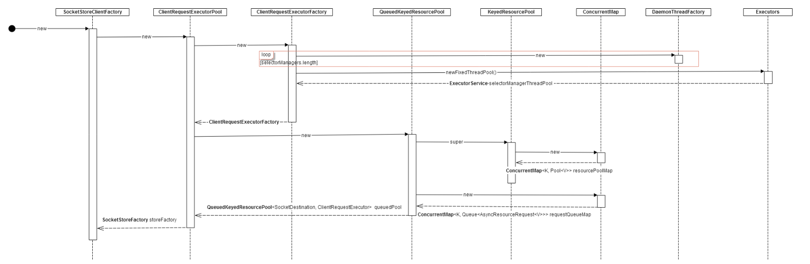

前言
先看一下官方的客户端示例
public class ClientExample {
public static void main(String[] args) {
// In real life this stuff would get wired in
String bootstrapUrl = "tcp://localhost:6666";
StoreClientFactory factory = new SocketStoreClientFactory(new ClientConfig().setBootstrapUrls(bootstrapUrl));
StoreClient<String, String> client = factory.getStoreClient("my_store_name");
// get the value
Versioned<String> version = client.get("some_key");
// modify the value
version.setObject("new_value");
// update the value
client.put("some_key", version);
}
}
这是源码example包中唯一的一个例子，可以看到如果我们作为普通调用者来使用voldemort是非常简单的，基本操作接口跟memchached类似。但如果想以voldemort为基础进行扩展或者定制化开发的开发人员来说，熟悉它的源码才能更好地使用它。
源码分析
从上面的代码可以看到，客户端使用voldemort大概分为这几个步骤：
- 创建StoreClientFactory
- 从storeClientFactory中得到想要操作store的StoreClient
- 使用StoreClient进行存取操作
下面我们一步一步来分析，它是怎么实现的。
建立SocketStoreClientFactory
时序图： 
涉及到的代码：
// client example
StoreClientFactory factory = new SocketStoreClientFactory(new ClientConfig().setBootstrapUrls(bootstrapUrl));
// ClientQuestExecutorPool.java
public SocketStoreClientFactory(ClientConfig config) {
super(config);
this.requestRoutingType = RequestRoutingType.getRequestRoutingType(RoutingTier.SERVER.equals(config.getRoutingTier()), false);
this.storeFactory = new ClientRequestExecutorPool(config.getSelectors(), config.getMaxConnectionsPerNode(), config.getConnectionTimeout(TimeUnit.MILLISECONDS), config.getSocketTimeout(TimeUnit.MILLISECONDS), config.getSocketBufferSize(), config.getSocketKeepAlive(), config.isJmxEnabled(), jmxId);
}
// ClientRequestExecutorPool.java
public ClientRequestExecutorPool(int selectors, int maxConnectionsPerNode, int connectionTimeoutMs, int soTimeoutMs, int socketBufferSize, boolean socketKeepAlive, boolean jmxEnabled, int jmxId) {
ResourcePoolConfig config = new ResourcePoolConfig().setIsFair(true) .setMaxPoolSize(maxConnectionsPerNode) .setMaxInvalidAttempts(maxConnectionsPerNode) .setTimeout(connectionTimeoutMs, TimeUnit.MILLISECONDS);
this.jmxEnabled = jmxEnabled;
this.jmxId = jmxId;
if(this.jmxEnabled) {
stats = new ClientSocketStats(jmxId);
JmxUtils.registerMbean(new ClientSocketStatsJmx(stats), JmxUtils.createObjectName(JmxUtils.getPackageName(this.getClass()), "aggregated" + JmxUtils.getJmxId(this.jmxId)));
} else {
stats = null;
}
this.factory = new ClientRequestExecutorFactory(selectors, connectionTimeoutMs, soTimeoutMs, socketBufferSize, socketKeepAlive, stats);
this.queuedPool = new QueuedKeyedResourcePool<SocketDestination, ClientRequestExecutor>(factory, config);
if(stats != null) {
this.stats.setPool(queuedPool);
}
}
// ClientRequestExecutorFactory.java
public ClientRequestExecutorFactory(int selectors, int connectTimeoutMs, int soTimeoutMs, int socketBufferSize, boolean socketKeepAlive, ClientSocketStats stats) {
this.connectTimeoutMs = connectTimeoutMs;
this.soTimeoutMs = soTimeoutMs;
this.created = new AtomicInteger(0);
this.destroyed = new AtomicInteger(0);
this.socketBufferSize = socketBufferSize;
this.socketKeepAlive = socketKeepAlive;
this.stats = stats;
this.selectorManagers = new ClientRequestSelectorManager[selectors];
this.selectorManagerThreadPool = Executors.newFixedThreadPool(selectorManagers.length, new DaemonThreadFactory("voldemort-niosocket-client-"));
for(int i = 0; i < selectorManagers.length; i++) {
selectorManagers[i] = new ClientRequestSelectorManager();
selectorManagerThreadPool.execute(selectorManagers[i]);
}
this.lastClosedTimestamps = new ConcurrentHashMap<SocketDestination, Long>();
}
// QueueKeyedResourcePool<K,V>
public QueuedKeyedResourcePool(ResourceFactory<K, V> objectFactory, ResourcePoolConfig config) {
super(objectFactory, config);
requestQueueMap = new ConcurrentHashMap<K, Queue<AsyncResourceRequest<V>>>();
}
查看源码可以知道，在我们执行“new SocketStoreClientFactory(...)”时，做了两部操作：
-
调用父类AbstractStoreClientFactory的构造函数，它内部做了两个重要操作
- 创建了一个ClientThreadPool对象
- 创建另一个RoutedStoreFactory对象
- 确定客户端请求路由类型
-
创建了一个ClientRequestExecutorPool对象，然后它内部有进行了如下操作：
- 注册JMX的Mbean（如果开启JMX的话）
-
创建了一个ClientRequestExecutorFactory对象，它内部做了如下操作：
- 新建一个线程池，默认大小为2
- 向线程池提交任务（ClientRequestSelectorManager） ,默认两个。
-
创建一个QueuedKeyedResourcePool<SocketDestination,ClientRequestExecutor>对象（注意配置泛型），它内部做了如下操作：
- 创建了一个以SocketDestination为key，以Queue<AsyncResourceRequest<ClinetRequestExecutor>>为value的HashMap。
取得相应的StoreClient
时序图：

涉及代码：
// SocketStoreClientFactory.java
@Override
public <K, V> StoreClient<K, V> getStoreClient(final String storeName, final InconsistencyResolver<Versioned<V>> resolver) {
if(getConfig().isLazyEnabled())
return new LazyStoreClient<K, V>(new Callable<StoreClient<K, V>>() {
public StoreClient<K, V> call() throws Exception {
return getParentStoreClient(storeName, resolver);
}
});
return getParentStoreClient(storeName, resolver);
}
private <K, V> StoreClient<K, V> getParentStoreClient(String storeName, InconsistencyResolver<Versioned<V>> resolver) {
return super.getStoreClient(storeName, resolver);
}
// AbstractStoreClientFactory.java
@Override
public <K, V> StoreClient<K, V> getStoreClient(String storeName) {
return getStoreClient(storeName, null);
}
@Override
public <K, V> StoreClient<K, V> getStoreClient(String storeName, InconsistencyResolver<Versioned<V>> resolver) {
DefaultStoreClient<K, V> client = null;
// If configured to cache store clients, check if we have a StoreClient
// created already
Pair<String, Object> cacheKey = Pair.create(storeName, (Object) resolver);
if(this.config.getCacheStoreClients() && storeClientCache.containsKey(cacheKey)) {
return (DefaultStoreClient<K, V>) storeClientCache.get(cacheKey);
}
// Else, we move on and create a store client object accordingly
if(this.config.isDefaultClientEnabled()) {
client = new DefaultStoreClient<K, V>(storeName, resolver, this, MAX_METADATA_REFRESH_ATTEMPTS);
} else if(this.bootstrapUrls.length > 0 && this.bootstrapUrls[0].getScheme().equals(HttpStoreClientFactory.URL_SCHEME)) {
client = new DefaultStoreClient<K, V>(storeName, resolver, this, MAX_METADATA_REFRESH_ATTEMPTS);
} else {
// Lazily intialize the resources needed for ZenStore clients.
if(!isZenStoreResourcesInited.get()) {
initZenStoreResourcesIfNeeded();
}
client = new ZenStoreClient<K, V>(storeName, resolver, this, MAX_METADATA_REFRESH_ATTEMPTS, clientContextName, clientSequencer.getAndIncrement(), config, scheduler, sysRepository);
}
// if configured to cache store clients, populate the cache
if(config.getCacheStoreClients()) {
// Note: We could potentially create the store client more than once
// from multiple threads. But, they will all eventually pick up the
// first created store client and let go off the instances they
// created
StoreClient<K, V> oldValue = (StoreClient<K, V>) storeClientCache.putIfAbsent(cacheKey,
client);
if(oldValue != null) {
// Losing thread(s) also pick up the winning value
client = (DefaultStoreClient<K, V>) storeClientCache.get(cacheKey);
}
}
client.setBeforeRebootstrapCallback(this.storeRebootstrapCallback);
return client;
}
// DefaultStoreClient.java
public DefaultStoreClient(String storeName, InconsistencyResolver<Versioned<V>> resolver, StoreClientFactory storeFactory, int maxMetadataRefreshAttempts) {
this.storeName = Utils.notNull(storeName);
this.resolver = resolver;
this.storeFactory = Utils.notNull(storeFactory);
this.metadataRefreshAttempts = maxMetadataRefreshAttempts;
// Registering self to be able to bootstrap client dynamically via JMX
JmxUtils.registerMbean(this, JmxUtils.createObjectName(JmxUtils.getPackageName(this.getClass()), JmxUtils.getClassName(this.getClass()) + "." + storeName));
bootStrap();
}
@JmxOperation(description = "bootstrap metadata from the cluster.")
public void bootStrap() {
if(beforeRebootstrapCallback != null) {
try {
beforeRebootstrapCallback.call();
} catch (Exception e) {
logger.warn("Exception caught when running callback before bootstrap", e);
}
}
logger.info("Bootstrapping metadata for store " + this.storeName);
this.store = storeFactory.getRawStore(storeName, resolver);
}
// AbstractStoreClientFactory.java
客户端程序调用了factory的getStoreClient方法，其实内部执行了如下操作：
-
调用AbstractStoreClientFactory的getStoreClient方法
-
一般情况会创建一个DefaultStoreClient对象然后返回
- 注册JMX 的Mbean
-
调用bootStrap方法
-
调用StoreClientFactory的getRawStore方法，实际上调用的AbstractStoreClientFactory的getRawStore方法
- 获取cluster和store的元数据信息
-
根据cluster配置中node信息构造nonblockingStores、nonblockingSlopStores、slopStores、clientMapping等
-
调用getStore方法，得到普通store对象，实际上是调用的ClientRequestExecuotPool的create方法
- 创建一个SocketStore对象，并返回
- 调用getStore方法，得到rawSlopStore对象，进行序列化包装后得到slopStore。
-
调用getStore方法，得到普通store对象，实际上是调用的ClientRequestExecuotPool的create方法
-
使用上一步构造的信息，调用RoutedStoreFactory的create方法，得到Store对象。
- 构造并返回了一个PipelineRoutedStore对象
- 对上一步的Store对象进行序列化保证得到最终结果
-
调用StoreClientFactory的getRawStore方法，实际上调用的AbstractStoreClientFactory的getRawStore方法
-
一般情况会创建一个DefaultStoreClient对象然后返回
这一步涉及到一个非常重要的类的创建PipelineRoutedStore，官方wiki提到，他们为了解决以前RoutedStore逻辑过于复杂的问题才引入的PipelineRoutedStore。
日期：2014-04-04
参考资料：